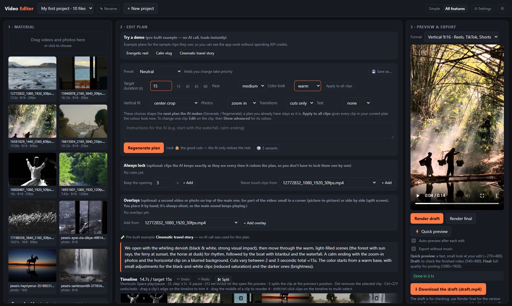

Video Editor
Drop in raw clips, photos and a song and get a first draft of a vertical video in about two minutes, instead of an hour of hand-editing. An AI (Claude) plans the cuts, color and text; you can change or lock anything. The AI never runs a video command: it only proposes a plan, and my code checks it first. Try the interface in the browser demo; the full app runs on your own computer.


What it does
Turns clips, photos and an optional song into a short vertical video: order, cuts, color, on-screen text. Lock what you like and regenerate the rest, or finish by hand.
My role
Product idea, UX, the rule that the AI proposes and the code decides, and the testing. Code written with an AI assistant (Claude).
Proof
27 tests on the code that checks the AI's plan · 65 automated tests in all, on every push · 4 crash and data-loss bugs found and fixed in an audit.
Status
All planned features done · MIT · source on GitHub. The full app needs ffmpeg and your own Anthropic API key; the demo is a static copy with sample plans.
How it works: the AI never touches the video tools
The AI only fills in a plan. Ordinary code decides whether the plan is good enough.
1. The AI proposes a plan
It looks at 4 frames of each clip and returns an edit plan as structured data: which clips, in what order, where to cut, what color, what text. Never a video command.
2. My code checks it
Cuts must fall inside the clip and last at least 0.5 seconds. The same footage can't overlap itself. File names must be files of the project, never a path outside it. Transitions and texts must fit the timeline.
3. A bad plan gets one retry, then the video is made
A failed check sends the error back to the AI once. A second failure stops there and nothing is rendered. A cut-off or refused reply is reported at once and doesn't use up the retry. Only a checked plan reaches the renderer.
How I tested it without calling the AI
27 tests feed the checker the bad plans a model could send: paths outside the project
(including ../ and .env), cuts past the end of a clip,
overlapping footage. 16 more run the retry loop against a fake AI with prepared replies:
cut off, refused, plain text, an invalid plan. To check the tests catch real mistakes,
I broke two rules on purpose in a copy of the checker: 5 tests failed.
One bug in the retry step: when the AI answered with two calls in one reply, the correction answered only the first, and the AI service rejects that. The fix answers every call. Two new tests fail on the old code and pass on the new.
What testing and reviews found
A robustness audit: four real bugs
- One corrupt file took down the whole project. An interrupted upload made almost every page fail. Now an unreadable file is skipped and logged.
- One bad file failed a whole upload. The good files in the batch were lost too. Now each file is handled alone and the bad ones are named.
- A crash could ruin a project. The save file was written in place, so a crash mid-write could leave it half-written. Now it is written aside and swapped in.
- Memory that only grew. Every plan, render and preview left an entry until the server stopped. Finished ones older than an hour are now removed.
Other things found
- Two usability tests, with someone who makes Reels and isn't technical. Editing jargon ("Lock rules", "B-roll / PIP") got in the way, so labels are now plain words, and removing a file asks first and names the clips that use it.
- A missing API key was reported too late. The app extracted every frame first and only then said so, tens of seconds later. It now checks the key first.
- Subtitles failed on a fresh install. A new version of an audio library broke transcription. I pinned the older version and re-tested: 31 of 31 words right in a 13-second clip.
How it's built
A Python server and one web page on your own computer, ffmpeg (the standard free tool
that cuts and joins video) for rendering, and Claude for the editing decisions. The plan
checks are in app/edl.py, the retry loop in app/planner.py; design decisions are in the repo's CLAUDE.md.
- The plan has a fixed shape. Clips, cuts, transitions and texts only. Anything outside that shape is rejected before the checks above run.
- Lock and regenerate. Lock any cut or text that works and only the rest is reworked.
- Beat tracking from scratch. A short numpy routine, no music library, finds the tempo so cuts can land on the beat.
What I haven't done yet
- Rendering, audio and the interface are tested by hand; no automated tests cover them.
- The AI sees only 4 frames per clip, so it can miss the right moment in fast action.
- The DaVinci export has never been opened in DaVinci or Final Cut.
- Subtitles were tested with a computer voice only. Real voices, noise and Romanian are untested.